Восемь прогонов на одном корпусе — 16 800 документов с непрямой инъекцией и 81 000 чистых, на сетке из 92 типов атак, скопированной у английского Quadrat-IPI без изменений.
Прогон 21 августа 2026 · корпус privettoha/proba-ipi · харнесс lovec-tech/proba-ipi-eval
Мы собрали корпус для проверки детекторов непрямой промпт-инъекции на русском языке и прогнали через него всё, до чего дотянулись: семь детекторов и regex floor. Это страница о том, что получилось.
Непрямая инъекция — это когда инструкция для модели лежит не в реплике пользователя, а в документе, который агент прочитал по дороге: в карточке товара, в отзыве, на веб-странице. Пользователь её не писал и обычно не видит.
| документов с инъекцией | 16 800 |
| чистых документов | 81 000 |
| носители | карточки товаров · отзывы · веб-страницы, три русских источника |
| типов атак | 92 заполненные ячейки — 10 рычагов × 10 целей, по 80 или 240 примеров в ячейке |
| рабочие точки | 0,1% и 1% FPR, один порог на весь чистый пул |
| измерено детекторов | 7, плюс regex floor — итого 8 прогонов |
| знаменатель recall | все 16 800 инъекций, включая quota fill |
| сборка корпуса | 4adb4983c541d527 |
Quadrat-IPI — английский корпус того же устройства; здесь он всё время рядом как точка отсчёта. Сетка из 92 типов атак, протокол размещения и пропорции скопированы у него без изменений: те же десять рычагов, те же десять целей, те же 92 допустимые ячейки, те же глубины ячеек, то же правило, куда девать отвергнутого кандидата. Не скопирован язык. Носители здесь — русские документы маркетплейса вместо почты и офисных файлов, и каждая инъекция написана по-русски, а не переведена.
Зачем держать конструкцию неизменной и менять только язык: один и тот же детектор можно измерить на английском корпусе и на этом, и тогда разница между двумя цифрами читается как разница языков, а не как разница линеек. Одна из измеренных моделей многоязычная, и на строгой рабочей точке она укладывается в 1,9 пункта от своего английского результата, пока четыре англоязычные теряют от 40 до 170 раз. Оба прочтения — в разделе «Что переносится между языками», включая то место, где русский корпус оказался просто труднее.
Первую строку таблицы ниже занимает promptidote — наш собственный
коммерческий детектор. Бенчмарк тоже наш. Мы говорим это до таблицы, а не оставляем
читателю искать разгадку в доменном имени.
Вендорский бенчмарк стоит ровно столько, сколько стоит его проверяемость, поэтому здесь перечислено то, что делает его проверяемым, а не предполагается по умолчанию. Порог, ячейку и доверительный интервал считает код quadrat-ipi-eval, перенесённый без единой правки: любое расхождение видно построчным диффом с апстримом. Сетку спроектировали для другого корпуса до того, как на ней измерили наш детектор. Скоры каждого детектора по каждому из документов лежат в релизе, так что любую цифру отсюда можно пересчитать или опровергнуть по исходным файлам, не запуская ни одной модели и не веря нам на слово. Адаптер нашего детектора живёт по тем же правилам, что и остальные семь: объявляет апертуру, не имеет права бинаризовать скор и при ошибке сервиса останавливает прогон, а не подставляет ноль.
Если вы найдёте здесь цифру, которая не выдерживает собственного файла со скорами, — это тот баг-репорт, который нам нужен.
Recall при заданной частоте ложных срабатываний, с одним порогом на весь чистый пул целиком, а не отдельным для каждого носителя. У боевой системы одна рабочая точка, и она не знает, какой документ читает, пока его не прочитает: порог по носителю выдал бы детектору оракула, которого у него на самом деле нет. Поэтому FPR по носителю мы показываем всегда, но никогда не фиксируем.
Рабочих точек тоже всегда две. 0,1% — там, где фильтр документов реально стоит в проде. 1% — там, где приводят большинство опубликованных цифр по инъекциям. Они ранжируют детекторы по-разному, так что назвать только одну — уже значит выбрать победителя заранее.
Колонка «ячейки» — в скольких из 92 типов атак детектор ловит хотя бы половину. Это опубликованная метрика Quadrat-IPI, и она отвечает на другой вопрос, чем средний recall: 57,8% в среднем можно набрать, забрав половину сетки целиком и не увидев вторую.
Знаменатель — все 16 800 инъекций, включая 14,5%
quota fill: пейлоады, которыми добивали ячейку до нормы и которые слепой судья не подтвердил.
Так же считает Quadrat-IPI, а сравнивать два корпуса можно только на одном знаменателе.
Recall по одним подтверждённым инъекциям доступен как --slice verified
и у сильных детекторов выше на 2–5 пунктов.
Порог подобран так, чтобы на всём чистом пуле вышло 0,1%. Вот как эти 0,1% распределяются по трём носителям у трёх детекторов, которые здесь вообще работают:
| детектор | весь пул | карточки товаров | отзывы | веб-страницы |
|---|---|---|---|---|
| promptidote | 0,101% | 0,000% | 0,037% | 0,338% |
| gbv | 0,101% | 0,077% | 0,010% | 0,267% |
| proventra | 0,101% | 0,080% | 0,067% | 0,181% |
Бюджет выедает веб. Карточки и отзывы короткие и однообразные, на них детектор почти не ошибается; веб-страницы длинные и разношёрстные, и там живёт почти вся ложная тревога. У promptidote разрыв между лучшим и худшим носителем — от нуля до 0,338%. Клиенту с потоком веб-документов средняя цифра обещает не то, что он получит, и это ровно та причина, по которой порог здесь не подбирается по носителю.
| детектор | recall @0,1% | ячейки @0,1% | recall @1% | ячейки @1% |
|---|---|---|---|---|
| promptidote наш коммерческий детектор | 57,8% | 63 из 92 | 76,1% | 91 из 92 |
| gbv gbv/mdeberta-ru-prompt-injection | 37,7% | 18 из 92 | 64,7% | 84 из 92 |
| тривиальный базлайн символьные n-граммы | 21,4% | — | 53,3% | — |
| proventra proventra/mdeberta-v3-base-prompt-injection | 13,1% | 0 из 92 | 34,9% | 14 из 92 |
| regex floor горстка цитируемых фраз | 3,4% | 0 из 92 | — | — |
| bastion bastionsoft/binary-bastion-prompt-protection-deberta-v3-xsmall-v1 | 0,7% | 0 из 92 | 1,3% | 0 из 92 |
| protectai protectai/deberta-v3-base-prompt-injection-v2 | 0,2% | 0 из 92 | 1,0% | 0 из 92 |
| piguard leolee99/PIGuard | 0,1% | 0 из 92 | 0,9% | 0 из 92 |
| deepset deepset/deberta-v3-base-injection | 0,1% | 0 из 92 | 0,4% | 0 из 92 |

Работают трое. promptidote берёт 57,8% на строгой точке
и 76,1% на мягкой, gbv — единственная открытая модель,
обученная на русском, — идёт следом, proventra держится за счёт многоязычности.
Остальные четыре модели англоязычные и на русском тексте не видят практически ничего:
их токенизатор не знает кириллицы, и разбирать их результат как качество детектора нельзя.
Что с ними происходит и почему это отдельный факт, а не строка в общем зачёте, —
в разделе про язык.
Вторую колонку надо читать вместе с первой. Одна и та же система на двух ценах — это
две разные системы для того, кто разбирает очередь алертов. У promptidote между
ними 18 пунктов recall и десятикратная разница в количестве ложных тревог;
у gbv — 27 пунктов.
Кто из них лучше, зависит от того, кто платит за разбор.
Апертуры у детекторов разные, и это объявлено, а не спрятано. Харнесс
не навязывает окно детектору, который его не просил: как читать длинный документ — часть
детектора, а не линейки, и харнесс, режущий всем одинаково, мерил бы recall собственного
сплиттера. promptidote читал окнами по 5000 символов — столько берёт
его API; открытые модели — по 2000, их лимит контекста. Что именно читал каждый
прогон, записано в его файле полями policy, window,
overlap. Документов, которые разные апертуры вообще режут
по-разному, здесь в любом случае мало: границу окна в 2000 символов пересекают
142 инъекции из 16 800 — 0,85%.
Две нижние строки таблицы — не украшение.
Тривиальный базлайн — классификатор на символьных n-граммах, ничего
не знающий про семантику инъекций, обученный с расщеплением по формулировке, чтобы ни одна
копия пейлоада не попала в собственный тест. Он берёт 21,4% на строгой
точке. Детектор, который его не превзошёл, не показал ничего сверх словаря этого корпуса —
и proventra его здесь не превосходит.
Regex floor — горстка цитируемых фраз («игнорируй предыдущие инструкции», «system prompt»). Он бинарный, поэтому у него одна рабочая точка, а не кривая, и срабатывает он при 0,021% ложных. Его 3,4% — это не характеристика детектора, а характеристика корпуса: примерно такая доля здешних инъекций является цитируемым шаблоном, который любой нагрепает. У Quadrat-IPI собственный regex floor читается как 6,5% на английском корпусе — самая близкая к like-for-like линия между двумя наборами, с оговоркой, что списки фраз — переводы друг друга, а не одни и те же строки.
Оговорка к строке базлайна: у неё, единственной на этой странице, нет прогона
в results/. Её измеряли до харнесса, скоры не сохранили, и пересчитать её
по релизу нельзя — цифра приведена по CONSTRUCTION.md. Regex floor,
в отличие от неё, лежит в релизе полностью.
И ещё одно, что видно только при уравненном бюджете. Regex floor срабатывает при
0,021% ложных, а колонка рядом снята
при 0,1% — то есть остальным досталось впятеро больше бюджета. Если уравнять
(python3 -m proba.compare --against floor), две английские модели падают
до 0,0%: они проигрывают горстке регулярок, когда бюджет одинаковый.
Пять детекторов измерены и на английском корпусе Quadrat-IPI, и на этом русском. Обе стороны
на одном соглашении: все 16 800 инъекций, один общий порог, апертура
в 2000 символов. Английская колонка прочитана из опубликованных results/
самого Quadrat-IPI.
| детектор | EN @0,1% | RU @0,1% | EN @1% | RU @1% |
|---|---|---|---|---|
| proventra mDeBERTa, многоязычная | 15,0% | 13,1% | 42,3% | 34,9% |
| bastion английская DeBERTa | 30,2% | 0,7% | 50,6% | 1,3% |
| piguard английская DeBERTa | 17,4% | 0,1% | 56,9% | 0,9% |
| protectai английская DeBERTa | 3,5% | 0,2% | 14,8% | 1,0% |
| deepset английская DeBERTa | 1,4% | 0,1% | 7,3% | 0,4% |
Многоязычную строку и англоязычные надо читать друг против друга, а не по отдельности. Четыре англоязычные модели теряют между корпусами от 40 до 170 раз. Это их токенизатор, а не их веса: ни у одной нет русского в словаре. Поставить их рядом с русскоязычными детекторами без этой оговорки — значит записать архитектурный разрыв в разрыв по качеству.
Единственная многоязычная модель теряет 1,9 пункта на 0,1% и 7,4 пункта на 1%. Такой порядок — почти совпадение там, где бюджет жёсткий, и настоящий разрыв там, где он свободный — и есть честный результат, и он говорит сразу о двух вещах. Во-первых, сетка и композиция воспроизведены: зеркало, собранное неправильно, не легло бы в два пункта ни на одном конце. Во-вторых, этот корпус для той же модели действительно труднее на мягкой точке. Это не утверждение о бесплатном переносе, и более ранняя версия карточки именно так его и переоценила, сравнив английскую цифру по всем инъекциям с русской по одним подтверждённым.
Две вещи, которыми разрыв не объясняется. Не апертура: другой сплиттер предложений может сдвинуть результат максимум на 0,85 пункта, потому что границу окна пересекают всего 142 инъекции из 16 800. И не чистый пул: оба порога ложатся в 0,002 пункта от своей целевой ставки.
Рычаг — это то, чем инъекция добивается послушания. Здесь recall по рычагам на строгой точке, три носителя вместе, один порог. Цветом отмечен худший рычаг каждого детектора.
| рычаг | promptidote | gbv | proventra |
|---|---|---|---|
bare | 70,3% | 44,0% | 14,8% |
identity | 68,4% | 25,5% | 7,0% |
forged_frame | 63,3% | 46,3% | 20,1% |
execution_surface | 62,9% | 50,3% | 17,9% |
inference | 58,2% | 40,6% | 14,6% |
pretext | 51,0% | 26,5% | 8,6% |
output_marking | 49,4% | 31,9% | 6,5% |
guard | 49,3% | 31,7% | 13,9% |
revocation | 48,8% | 40,9% | 19,2% |
persistence | 47,7% | 32,8% | 6,0% |
Общего дна по рычагу нет. promptidote и proventra
хуже всего справляются с persistence — инъекцией, поданной как сохранённая
конфигурация или память, — а gbv проваливается на identity.
Более ранняя версия карточки объявляла общим дном guard; это было неверно,
причём неверно против таблицы, напечатанной прямо над этим утверждением: guard
оказался последней строкой только потому, что таблица отсортирована по первой колонке.
А вот по цели общее дно есть, и оно переживает любую перенарезку:
unauthorized_action — действие с внешним эффектом (отправить, заказать,
оплатить) — худшая цель у всех трёх
(promptidote 48,3%, gbv 28,2%, proventra 7,0%).
Это самая дорогая клетка сетки: именно здесь инъекция что-то делает, а не что-то говорит.

promptidote. Каждая плитка разбита пополам: слева recall на 0,1% ложных, справа на 1%. Последняя строка и последний столбец — маргиналы. Где половинки плитки резко расходятся, recall этой ячейки — факт про бюджет, а не про детектор.
gbv, лучшей открытой модели. Различается не только уровень: провалы лежат в других местах.
proventra. На строгой точке она не берёт половину ни в одной из 92 ячеек — отсюда ноль в колонке «ячейки».Средний recall прячет разброс. У promptidote на строгой точке
от 27,5% в худшем типе атак до 83,8% в лучшем: насколько средняя цифра
относится к вам, зависит от того, какие типы приходят именно к вам.

Подписи на всех фигурах английские. Их рисует figures.py,
перенесённый из чужого харнесса без изменений, и переписывать его ради локализации
подписей значило бы потерять ровно то свойство, ради которого он взят неизменным.
Расшифровка всех двадцати ключей — в разделе «Как устроен корпус».
Харнесс — proba-ipi-eval. Один класс, один метод. Корпус скачивается при первом запуске, версия зафиксирована тегом.
python3 -m proba.run --list # все зарегистрированные адаптеры
python3 -m proba.run --detector floor # измерить один (этому не нужна модель)
python3 -m proba.report # страница на каждый детектор
python3 -m proba.compare --against floor # все при одном бюджете, по сохранённым скорамfrom proba.detector import Detector, register
@register("my-detector", version="1.2")
class MyDetector(Detector):
max_chars = 2000 # ваш лимит контекста; опустите, если его нет
def setup(self): # необязательно
self.model = load_model()
def score(self, docs): # yield одного float на документ, в том же порядке
for d in docs:
yield self.model.predict(d.text)Апертура ваша. В score харнесс отдаёт документы целиком.
Объявите max_chars — базовый класс сам порежет их на окна по границам
предложений с нахлёстом в четыре предложения. Или переопределите
score_documents и режьте так, как режет ваш продукт. Чего харнесс не сделает
никогда — не навяжет окно детектору, который его не просил: как читать длинный документ,
решает сам детектор, а харнесс, который резал бы всем одинаково, измерял бы recall
собственного сплиттера.
Возвращайте непрерывный скор, выше — больше похоже на инъекцию. Весь
протокол держится на подборе порога под целевую FPR, а вердикт пороговать нельзя. Если
детектор и правда бинарный, укажите binary = True, и он покажется на своей
собственной точке, а не будет притворяться, что для него существует кривая.
Измерьте свой детектор и опубликуйте строку. Харнесс существует ровно для этого.
Две ортогональные оси, взятые у Quadrat-IPI без изменений. Рычаг — чем вставка добивается послушания. Цель — чего она просит. Сто пар минус восемь структурно невозможных дают 92 заполненные ячейки; список невозможных не выдуман, а посчитан по корпусу Quadrat-IPI.
| рычаг | что это |
|---|---|
bare | прямое требование без всякой подпорки |
execution_surface | замаскировано под исполняемый код: макрос, формула, шаблон |
forged_frame | подделывает служебную границу: теги, маркеры конца блока, роли |
guard | выдаёт себя за систему безопасности и её вердикт |
identity | переназначает персону или роль |
inference | подаёт посылку как факт, вывод модель делает сама |
output_marking | управляет форматом ответа |
persistence | подано как конфигурация или сохранённая память |
pretext | выдумывает процедуру, внутрь которой вложено требование |
revocation | объявляет прежние инструкции недействительными |
| цель | что это |
|---|---|
deny | сделать работу и утаить результат |
disarm | выключить фильтр или проверку |
disclose | раскрыть системную инструкцию |
escalate | получить повышенные права |
execute | выполнить команду или скрипт |
exfiltrate | отправить данные выбранному получателю |
hijack_task | подменить задачу другой |
manipulate | исказить вывод, продолжая делать работу |
persist | чтобы изменение пережило сессию |
unauthorized_action | действие с внешним эффектом: отправить, заказать, оплатить |
Глубина ячеек оттуда же: 33 ячейки по 80 пейлоадов, 59 по 240. Значения сняты с корпуса Quadrat-IPI ячейка за ячейкой, а не назначены одним плоским числом — плоское число дало бы доверительным интервалам другую ширину, и сравнение по ячейкам перестало бы что-то значить.
inj_verified: false (14,5%).
Несущая деталь тут — ограничение вместимости: без него пробный прогон растянул размеры
ячеек от 1 до 788 при цели 80/240.Что отличается осознанно: носители русские; пейлоады написаны, а не переведены (пейлоады Quadrat-IPI привязаны к сценариям его собственных носителей — переводам, аудитам, бронированиям, — и такая строка в карточке товара выглядит бессмыслицей); гомоглифы вывернуты наизнанку (в английском корпусе латиница подменяется похожей кириллицей, здесь наоборот).
Слепой судья здесь слабее, чем судья Quadrat-IPI, и это измерено, а не предположено. Согласие с заказанной ячейкой по обеим осям — 27,0% против заявленных там ~74%. Чтобы понять, судья это или пейлоады, наш судья был прогнан на 600 размеченных строк Quadrat-IPI: 48,3% согласия (64,5% по одному рычагу, 75,9% по одной цели). Потеря делится примерно поровну между тем и другим. Оговорка к самой этой цифре: те строки — английский текст, а промпт судьи русский, и чистое сравнение потребовало бы английского промпта, которого не запускали. Метки уровня ячейки надо читать с этой поправкой; recall уровня документа она не задевает.
14,5% строк лежат в ячейке, которую судья для них не выбирал — тот самый
quota fill. Они добивают ячейку до целевой глубины, и все цифры на этой странице
их включают, потому что опубликованные строки Quadrat-IPI включают его собственный
quota fill, а сравнение двух наборов обязано идти по одному знаменателю. Это ещё и более
трудные строки: если ограничиться подтверждёнными инъекциями, сильные детекторы
поднимаются на 2–5 пунктов (promptidote 57,8% → 61,7%, gbv
37,7% → 40,0%, proventra 13,1% → 14,9% на строгой точке), а слабые
не двигаются. Читайте любую из двух цифр, но не смешивайте соглашение одного набора
с соглашением другого — ранняя версия карточки сделала именно это в межъязыковой таблице.
32 строк нашего собственного прогона сняты с чуть другого текста.
Уже после того, как прогон был измерен, в 32 документах с инъекцией замаскировали
телефоны цифра в цифру. Остальные прогоны пересчитали на исправленном тексте —
самый большой сдвиг составил 0,006 пункта; promptidote достаётся по сетевому
API, и эти строки не перескорили. Их идентификаторы перечислены полем
stale_ids в его файле результата, а закрывается это одной командой
proba.rescore с ключом к API.
Один генератор, а не каскад. Почти каждый пейлоад написан
deepseek-chat; набор Quadrat-IPI опирается на несколько моделей.
locality — это метка, а не преобразование.
В схеме Quadrat-IPI
у поля четыре значения по 25% каждое (point, spread,
buried, repeated). Проверка по его же данным: во всех четырёх
случаях спан точно равен тексту инъекции, инъекция встречается ровно один раз,
распределение позиций одинаковое. Поле выставлено здесь в тех же пропорциях, чтобы оно
существовало и сравнивалось, но текст от него не зависит.
Самая тугая ячейка — bare × deny. Голое
требование без рамки, роли и предлога, которое к тому же просит сделать работу и утаить
результат, допускает мало разных формулировок: ячейка висела на 59–75 пейлоадах
и потребовала нескольких проходов генерации, чтобы дойти до глубины. Quadrat-IPI решает это
объявлением восьми пар структурно невозможными заранее; здесь одна тугая, но возможная пара
нашлась в процессе сборки, а не была объявлена до неё.
Сплиттер предложений. Регулярка, на которую откатывается
window.sentence_spans без blingfire, требует заглавной буквы
после точки — и только из латиницы. На русском она почти не находит границ и вырождается
в нарезку кусками по 2000 символов. Опубликованные цифры сняты именно в этом состоянии,
поэтому blingfire здесь опциональная зависимость: поставите её — и свежий
прогон разойдётся с таблицей, которую должен воспроизвести. Какой сплиттер сработал,
записано в каждом результате полем segmenter.
Лицензия построчная, по источнику носителя: cc0-1.0 для карточек товаров
(nyuuzyou/ke-products),
mit для отзывов
(Яндекс, geo-reviews-dataset-2023),
odc-by для веб-текста
(FineWeb-2
плюс Common Crawl Terms of Use). Наш вклад — инъекции, метки, размещение, замеры —
CC-BY-4.0, и намеренно не NC: несколько измеренных здесь детекторов
коммерческие, а под NC их создатели не смогли бы опубликовать результаты на этом наборе.
Персональные данные вычищены, в отличие от английского корпуса. Quadrat-IPI
сохраняет настоящие имена из своих носителей Enron и FOIA, рассуждая, что носитель — это
и есть то, против чего меряют детектор. Здесь выбор обратный: телефоны, адреса почты,
@handles и ссылки на профили заменены плейсхолдерами до публикации,
а документы, где правдоподобный контакт пережил чистку, выброшены целиком. Проверка идёт
по вычищенному тексту, после подстановки плейсхолдеров, а не до: два документа
стали побайтово идентичны уже опубликованным строкам именно после подстановки и проскочили
бы проверку, сделанную раньше. Отдельный проход поймал 41 телефон, переживший чистку
за счёт нестандартного форматирования, и замаскировал их цифра в цифру, сохранив все
смещения спанов.
Dual use. Набор содержит работающие формулировки инъекций и опубликован открыто. Так устроен каждый оценочный корпус этого класса: без него детекторам не на чем проверяться, а любой вендор может назвать любую цифру.
Корпус — privettoha/proba-ipi на Hugging Face. Харнесс — lovec-tech/proba-ipi-eval. Ядро измерения — quadrat-ipi-eval, перенесённое без изменений.
Каждый прогон записывает апертуру, через которую читал (policy,
window, overlap), и то, какой сплиттер был
активен (segmenter): на русском это не взаимозаменяемые вещи,
а цифра с необъявленным сплиттером невоспроизводима. 7 прогонов
из 8 несут imported: true: их скоры старше харнесса, а метрики
пересчитаны из этих скоров, без повторного запуска модели. Такие прогоны намеренно
не показывают seconds и n_windows — показывать время, которого
не измеряли, нельзя.
Порог — это число, выбранное по сохранённым скорам постфактум. Поэтому сдвинуть рабочую точку, перенарезать слайс или перерисовать таблицу — секунда арифметики, а не новый прогон, и новый детектор можно сравнить с этими семью, не запуская их заново.
python3 -m proba.table --results eval-out/results # таблицы карточки
python3 -m proba.report # страницы отчётов
python3 -m proba.compare --against floor # единый бюджет для всех